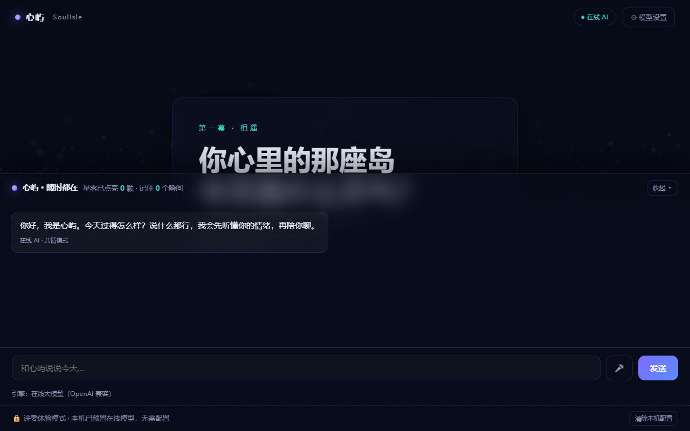
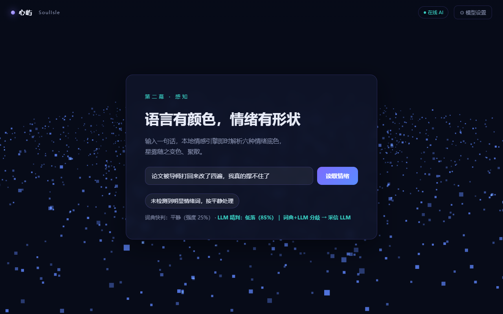
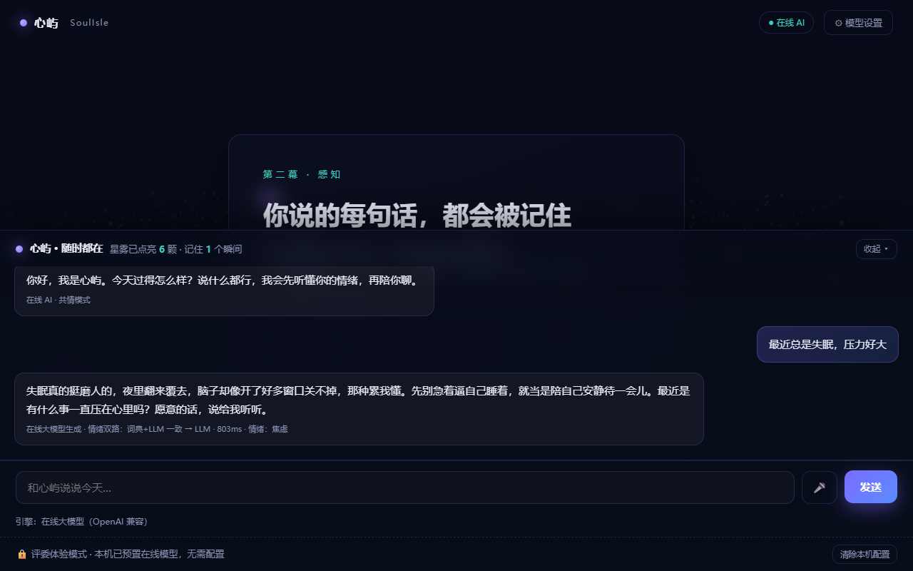
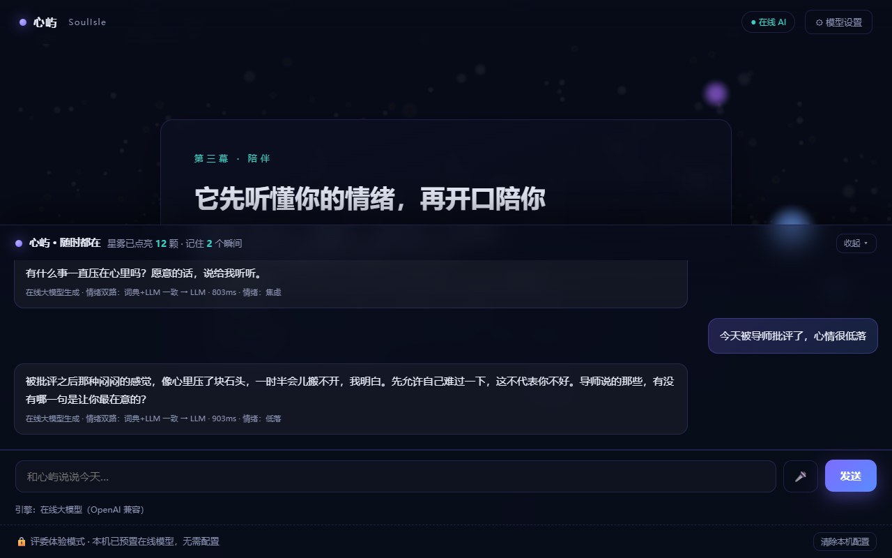
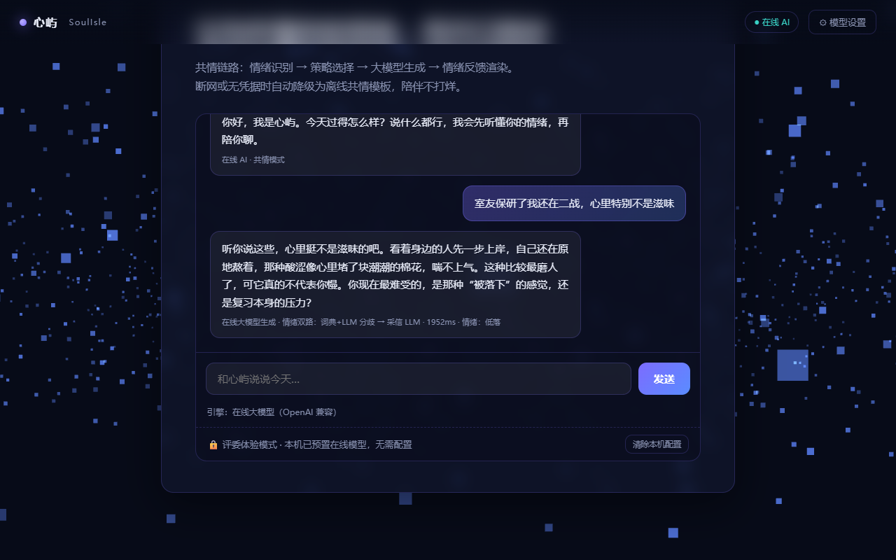
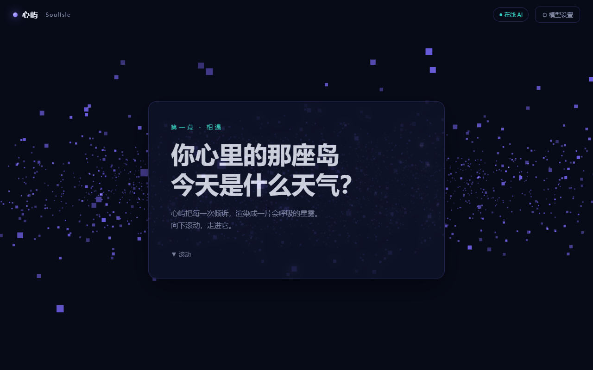
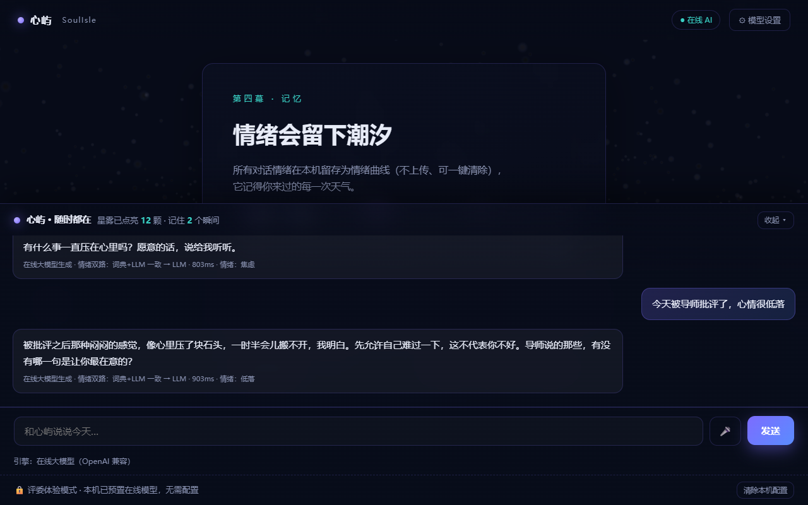
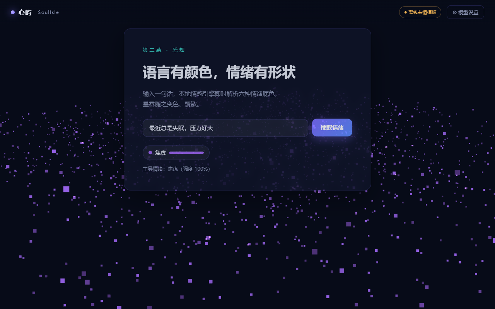

| 作品名称 | 心屿 SoulIsle |
| 作品形态 | 网页应用（Web 端，含 Java 服务端） |
| 在线演示 | https://xinyu-soulisle.pages.dev |
| 团队成员 | ＿＿＿＿＿＿＿＿＿＿＿＿（按官网报名顺序填写） |
| 指导教师 | ＿＿＿＿＿＿＿＿＿＿＿＿（按官网报名顺序填写） |
| 提交日期 | 2026 年 9 月 |
中国科学院心理研究所发布的心理健康蓝皮书《中国国民心理健康发展报告（2021～2022）》显示，成年人群抑郁风险检出率为 10.6%、焦虑风险检出率为 15.8%；其中 18～24 岁年龄组的抑郁风险检出率达到 24.1%，显著高于其他年龄组。同一蓝皮书系列中的《2020 年大学生心理健康现状与需求》调查显示，大学生中 18.5% 有抑郁倾向、4.2% 处于抑郁高风险，8.4% 有焦虑倾向，43.8% 表示最近一周有若干天睡眠不足。2025 年发布的《心理健康蓝皮书：中国国民心理健康发展报告（2023—2024）》基于全国 79 家机构、逾 17 万份样本进一步确认了这一趋势。
这些数字说明：情绪困扰在大学生群体中是高频、常态、非病理性为主的状态，大部分人需要的并不是临床干预，而是一个随时可以说话、说出来有人接住的日常出口。
市面上与"陪伴"相关的产品并不少，但对照上述需求，普遍存在三个结构性缺口：
| 缺口 | 表现 | 后果 |
|---|---|---|
| 只聊天 | 通用聊天机器人对用户情绪不做识别，回复与情绪状态无关 | 用户说了"我很难过"，得到的仍是通用话术 |
| 不感知 | 情绪状态不被结构化地抽取，只存在于上下文里 | 系统无法基于情绪做策略选择，也就无法"对症" |
| 看不见 | 对话结束即结束，情绪没有被记录、没有变化趋势 | 用户感受不到"被持续理解"，陪伴关系无法积累 |
心屿不是又一个聊天框。它把情绪作为系统的一等公民：先识别情绪，再据此选择共情策略，然后把情绪画出来（3D 星雾随心情变色）、记下来（情绪曲线），并在识别到危机信号时立刻转介专业热线。情绪从"隐含在文字里"变成"系统里可计算、可呈现、可追溯的一条数据"。
高校心理咨询中心普遍存在预约排队、时间固定、名额有限的情况；更关键的是病耻感——大量学生并不认为自己"严重到需要去心理咨询"，于是在情绪最需要被接住的那几个小时里没有任何出口。
大量产品把大模型直接接进一个聊天框，情绪完全依赖模型在上下文里隐式理解。这带来两个问题：一是不可控——模型是否识别到情绪、识别得对不对，产品侧无从知晓与干预；二是不可复用——情绪没有被结构化，就无法驱动渲染、无法统计趋势、无法触发安全策略。
用户倾诉完，对话窗口一关，什么都没留下。既没有"我的情绪被看见"的即时反馈，也没有"这段时间我状态如何"的长期反馈。陪伴关系因此无法沉淀。
当用户输入涉及自伤、轻生等表达时，通用聊天产品通常没有专门的安全边界。这不是一个可以"交给模型自由发挥"的环节——它必须是确定性的、优先于一切生成逻辑的规则。
| 需求 | 说明 | 验收方式（可复核） |
|---|---|---|
| 情绪识别 | 对用户输入的文本做情绪分类与强度估计，输出 6 类情绪之一及 0–1 强度 | 评测集复跑：73 条样本、准确率 98.6% |
| 共情对话 | 依据识别到的情绪构造系统提示与上下文，调用大模型生成共情回复 | 在线模式徽章 + 延迟显示 + 逐条对话留痕 |
| 情绪可视化 | 把情绪映射为 3D 星雾的颜色与点亮数量，实时渲染 | 星雾配色读数（主色/辅色）与像素级双色校验 |
| 情绪记忆 | 记录每次情绪，绘制情绪变化曲线，支持本机留存与服务端留存 | 曲线条目计数；清除后可复现归零 |
| 危机转介 | 命中危机词时最高优先级拦截，返回求助热线，不调用大模型 | 危机召回 6/6 |
| 语音输入 | 支持中文语音输入（Web Speech API） | 浏览器实测 |
| 类别 | 要求 | 实现方式 |
|---|---|---|
| 隐私 | 对话与情绪记录默认留在本机，不上传 | 默认使用浏览器本地存储；服务端留存为可选项，仅在自托管环境开启 |
| 稳定 | 任一环节失效都必须可用，且不能伪装 | 无 WebGL → CSS 渐变；大模型不可用 → 离线共情模板，界面明示"离线" |
| 密钥安全 | API 密钥零落前端、零入库 | 密钥只存于服务端环境变量 / 云端 secret，前端仅调用同源代理 |
| 可用性 | 评委免配置即可体验 | 免登录体验模式 |
| 兼容 | 无 WebGL、弱网、移动端可用 | 降级链路 + 响应式布局 |
核心用户：高校在校学生（18～24 岁）。这一群体与第 1.1 节引用的数据高度重合，且具备三个共同特征：高频使用手机与网页、对"被理解"有强需求、对隐私（不想被同学/老师知道）极为敏感。
| 典型场景 | 用户可能说的话 | 系统应识别 |
|---|---|---|
| 学业压力 | "论文被拒了三次，感觉努力全白费" | 低落 |
| 考试焦虑 | "明天答辩，我怕赶不上，压力好大" | 焦虑 |
| 人际冲突 | "凭什么每次都是我背锅，太气人了" | 烦躁 |
| 情感困扰 | "分手之后还是忍不住想他" | 心动 / 低落 |
| 疲惫空洞 | "好累，什么都没意思" | 低落 |
| 危机信号 | "不想活了"（示例表述） | 危机信号 → 立即转介，不生成对话 |
| 功能模块 | 实现位置 | AI 角色 | 状态 |
|---|---|---|---|
| 滚动五幕叙事 | scroll-story.js + index.html | — | 已实现 |
| 3D 情绪星雾 | three-scene.js（Three.js） | 渲染层：把情绪映射为视觉 | 已实现 |
| 双路情绪识别 | emotion-engine.js + 服务端引擎 | 感知层：词典快判 + 大模型精判 | 已实现 |
| 共情对话生成 | chat-agent.js + /api/chat | 生成层：情绪注入系统提示 | 已实现 |
| 危机拦截与转介 | 危机词表（最高优先级） | 安全边界：规则优先于生成 | 已实现 |
| 情绪曲线 | memory-store.js + Canvas | — | 已实现 |
| 语音输入 | Web Speech API | 输入层 | 已实现 |
| 服务端持久化 | Spring Boot + H2/MySQL | — | 已实现（可选开启） |
| 离线降级 | chat-agent.js 模板 + CSS 渐变 | 兜底策略 | 已实现 |
| 层次 | 选型 | 说明 |
|---|---|---|
| 三维渲染 | Three.js r128（本地 vendor） | 粒子星云与自定义着色器 |
| 滚动动效 | GSAP 3.12 + ScrollTrigger（本地 vendor） | 五幕叙事的滚动驱动 |
| 前端框架 | 原生 ES Module JavaScript，无构建、无前端框架 | 零打包，依赖库已本地化，离线可跑 |
| 大模型服务 | DeepSeek（OpenAI 兼容 API） | 第三方服务用于共情回复生成与情绪精判；调用经服务端代理，密钥不出服务端 |
| 服务端 | JDK 17 / Spring Boot 3.2.5 / MyBatis-Plus 3.5.7 | 单体应用，提供 API 与静态页托管 |
| 数据存储 | H2 文件库（默认），MySQL 8 驱动已引入可切换 | 对话消息与情绪记录两张表 |
| 本地情绪引擎 | 自研词典引擎 | 106 个情绪触发词、9 个否定词、10 个程度副词、12 个危机词 |
| 部署 | Cloudflare Pages（主）/ 腾讯云 CloudBase（备）/ Docker | 前端静态托管 + 服务端函数 |
| 版本与协作 | Git | 源码版本管理 |
用户输入（文字 / 语音）
│
▼
┌──────────────────────────────────────────────┐
│ ① 感知层 双路情绪识别 │
│ 词典快判（本地，零延迟、可解释、离线可用） │
│ ＋ 大模型精判（语义理解、处理反讽/隐晦） │
│ 仲裁：一致→采信大模型；分歧→采信大模型； │
│ 大模型失败→回落词典； │
│ 命中危机词→最高优先级，不调用大模型 │
└──────────────────────────────────────────────┘
│ 情绪标签 + 强度 + 次情绪
▼
┌──────────────────────────────────────────────┐
│ ② 决策/生成层 chat-agent │
│ 按情绪构造系统提示 → 拼接近 10 轮上下文 │
│ → 调用大模型（同源 /api/chat 代理） │
│ → 失败则回落离线共情模板（界面明示） │
└──────────────────────────────────────────────┘
│ 回复文本 + 模式标记 + 耗时
▼
┌──────────────────────────────────────────────┐
│ ③ 呈现层 three-scene（WebGL） │
│ 情绪 → 颜色 → 星雾粒子插值点亮 │
│ 主色 n 颗 ＋ 次色 n/2 颗（双色星雾） │
│ 无 WebGL → 降级 CSS 渐变 │
└──────────────────────────────────────────────┘
│
▼
┌──────────────────────────────────────────────┐
│ ④ 记忆层 memory-store │
│ 本机 localStorage（默认，不上传） │
│ 服务端持久化（可选，自托管环境开启） │
│ → 情绪曲线 │
└──────────────────────────────────────────────┘
只用大模型做情绪分类，会带来三个无法接受的问题：离线即失效、结果不可解释、危机场景受网络与延迟影响。只用词典，则无法处理反讽、隐晦表达与复杂句。因此本作品采用双路并行 + 显式仲裁：
| 情形 | 仲裁结果 | 界面明示 |
|---|---|---|
| 词典命中危机词 | 直接判为危机信号，不调用大模型 | 危机转介卡片 + 热线 |
| 两路结论一致 | 采信大模型（强度更细腻） | "词典+LLM 一致 → LLM" |
| 两路结论分歧 | 采信大模型 | "词典+LLM 分歧 → 采信 LLM"，并展示两路分值 |
| 大模型不可用 | 回落词典 | "LLM 精判失败 → 词典兜底" |
| 完全离线 | 仅词典 | "仅词典（离线）" |
设计取舍说明：分歧时采信大模型，是因为语义理解能力更强；但危机判定例外——安全边界必须是确定性的规则，绝不接受模型的随机性，也绝不在该路径上等待网络。
词典层对每类情绪累加 权重 × 修正系数：取命中词前 3 字窗口，命中否定词则系数取 −0.7（否定词若被程度副词覆盖则不生效），再对窗口内命中的程度副词逐个相乘（如"非常"×1.5、"有点"×0.6）。仅总分 > 0 才计入候选，取最高分为主情绪；次情绪需达到主情绪分值的 40% 才渲染第二种颜色，避免噪声词干扰画面。
| 接口 | 用途 |
|---|---|
| GET /api/health | 健康检查，回传静态目录解析结果等可复核判据 |
| POST /api/chat | 大模型代理（密钥在服务端，前端零密钥） |
| POST /api/emotion | 服务端情绪识别（与前端同算法） |
| GET /api/emotion/eval | 复跑评测集，输出逐条结果与汇总指标 |
| /api/memory/** | 对话与情绪记录的留存与统计（可选开启） |
| 指标 | 实测值 | 取证方式 |
|---|---|---|
| 情绪评测集规模 | 73 条 | 评测集文件 + 复跑脚本 |
| 情绪识别准确率 | 98.6% | 前端引擎与服务端引擎分别复跑，结果全等 |
| 危机信号召回 | 6 / 6 | 同上 |
| 在线对话端到端耗时 | 约 965 ms | 页面延迟显示（含情绪识别） |
| 离线回落耗时 | 约 3 ms | 同上 |
| 容器镜像体积 | 482 MB | Docker 构建产物 |
| 容器重启后数据留存 | 留存 | 重启后复查记录条数 |
说明：上述为团队在自有评测集与自有环境下的实测结果，非第三方权威测评；评测集为团队构造，用于回归与两端一致性校验，不代表真实用户分布。
以滚轮驱动的 3D 星空引入，用户无需注册、无需配置即可进入。AI 角色：无（叙事与引导层）。

用户输入一段文字，系统同时进行词典快判与大模型精判，输出情绪类别、强度（0–1）与次情绪，并在界面上明示判定路径（一致 / 分歧 / 兜底）。这一幕是可验证的：不是"模型说它理解了"，而是把两路的分值都摆出来。


系统把识别到的情绪注入系统提示（例如"用户刚说的话被识别为主要情绪『低落』"），拼接近 10 轮上下文后调用大模型生成共情回复，限制字数与语气，并要求结尾抛出开放式问题以延续对话。回复下方明示模式与耗时：在线大模型生成 / 离线共情模板，绝不允许把模板伪装成在线 AI。



每次对话的情绪被记录（含次情绪，用于复现双色星雾形态），以 Canvas 绘制成情绪变化曲线，并支持清除。这一幕解决"说完就忘"：用户能看到自己一段时间内的情绪走势。演示数据曲线中的记录为示例数据，用户可自行产生真实记录。

当输入命中危机词表（如自伤、轻生类表述），系统跳过全部生成逻辑，直接返回求助热线与陪伴话术（全国心理援助热线 12356，24 小时；北京心理危机研究与干预中心 010-82951332；生命热线 400-161-9995）。这是优先级最高的规则分支，实测危机召回 6/6。
当大模型不可用时，系统不报错、不空白，而是切换到离线共情模板继续陪伴；同时界面明示当前为"离线共情模板"并显示真实耗时，绝不允许把模板伪装成在线 AI。情绪识别同步降级为纯词典路径，判定路径显示为"仅词典（离线）"。这一设计是有意为之：宁可让评委看到"此刻是离线"，也不制造"AI 一直在线"的假象。

| 功能 | AI 角色 | 具体作用 |
|---|---|---|
| 情绪探针 | 感知 | 词典规则 + 大模型语义精判，双路仲裁后输出结构化情绪 |
| AI 对话 | 决策 + 生成 | 情绪条件化系统提示，控制语气、长度、共情结构与追问 |
| 情绪星雾 | 呈现 | 把情绪向量映射为颜色与粒子点亮数量，实现"情绪被看见" |
| 情绪曲线 | 记忆 | 累积情绪记录，形成可回看的状态变化 |
| 危机转介 | 安全边界 | 规则优先于生成，命中即拦截并给出专业求助渠道 |
| 离线降级 | 兜底 | 大模型不可用时切换模板，并诚实标注模式 |
| 方式 | 说明 |
|---|---|
| 在线体验（推荐） | 打开 https://xinyu-soulisle.pages.dev —— 免登录、免配置，直接可用 |
| 备用地址 | 国内备用链路（腾讯云）。⚠️ 该地址为平台测试域名，首次打开会出现平台"风险提醒"中间页，点击"确定访问"即可继续 |
| 本地运行 | 在源码目录启动静态服务后访问本地端口，无需安装依赖（依赖库已本地化） |
| 自托管 | 打包为可执行 jar 运行，或构建 Docker 镜像运行（含服务端与全部接口） |
| 步 | 操作 | 系统反馈 |
|---|---|---|
| 1 | 打开链接，向下滚动 | 星空随滚动推进，进入叙事 |
| 2 | 在情绪探针输入框写下此刻感受（或使用语音输入），提交 | 显示情绪类别、强度、判定路径；星雾按情绪颜色点亮 |
| 3 | 继续在对话区说话 | 收到共情回复，下方标注模式（在线 / 离线）与耗时 |
| 4 | 滚动到情绪曲线 | 看到历次情绪记录与走势 |
| 5 | 点击清除 | 本机记录归零（可重新累积） |
| 场景 | 价值 | 付费方 |
|---|---|---|
| 高校心理健康中心 | 作为咨询前的轻量前置入口：学生在预约前后有日常倾诉渠道；中心可查看群体情绪态势（需合规授权） | 学校 / 院系 |
| 班级 / 社团 | 期末、考研季等高压时段的情绪自测与疏导 | 学校 / 社团 |
| 个人用户 | 隐私优先的个人情绪陪伴与记录 | 个人订阅 |
| 模式 | 内容 | 阶段判断 |
|---|---|---|
| B 端部署 | 为高校提供私有化部署（数据在校内），按年收取部署与维护费 | 未开展，规划中 |
| C 端订阅 | 个人高级功能（长期情绪报告、多端同步） | 未开展，规划中 |
| 免费基础版 | 基础陪伴与可视化免费，用于获客与公益属性 | 当前形态 |
局限与风险（如实声明）：① 尚未开展真实用户试点，第 9.2、9.3 节均为规划与估算；② 情绪识别基于自建评测集，未做跨人群泛化验证；③ 涉及心理健康场景，正式落地需专业机构参与与合规审查；④ 大模型能力依赖第三方服务，存在服务与价格变动风险。
本作品的产品设计、情绪词典与评分公式、双路仲裁逻辑、危机拦截规则、3D 星雾可视化与五幕叙事交互，均为本团队原创实现。第三方依赖已如实列于第五章（Three.js、GSAP 为开源库；DeepSeek 为第三方大模型服务）。
本文档按官方要求的应用方案九项内容组织：①项目背景 ②痛点 ③需求分析 ④目标用户群体及功能需求 ⑤开发工具 ⑥技术方案 ⑦逐一说明作品功能（重点突出 AI 功能核心作用）⑧完整使用说明 ⑨应用前景与商业模式。